From reclaimed open spaces and restored historic landmarks to modern civic buildings and infrastructure, our portfolio reflects three decades of thoughtful design projects shaped by context, built to serve communities, and made to last.
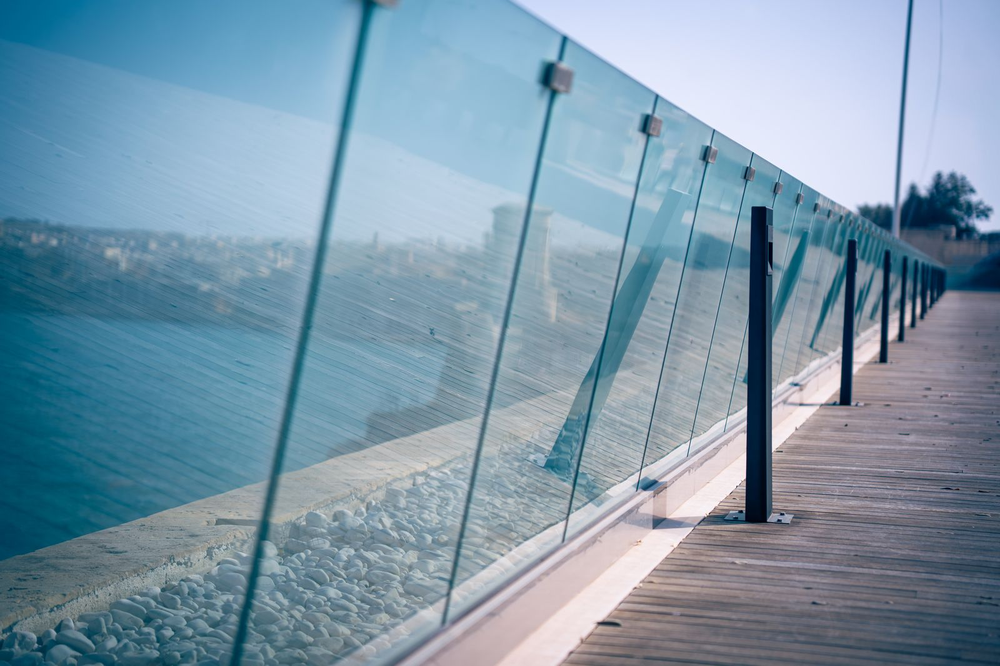
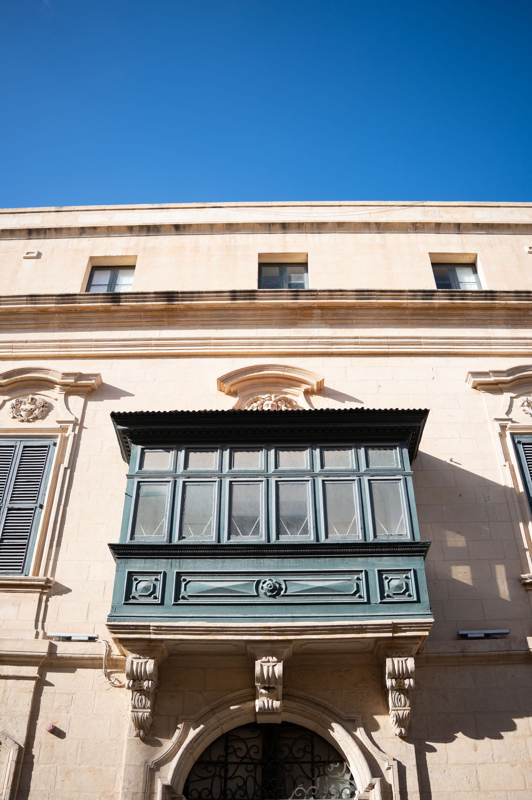
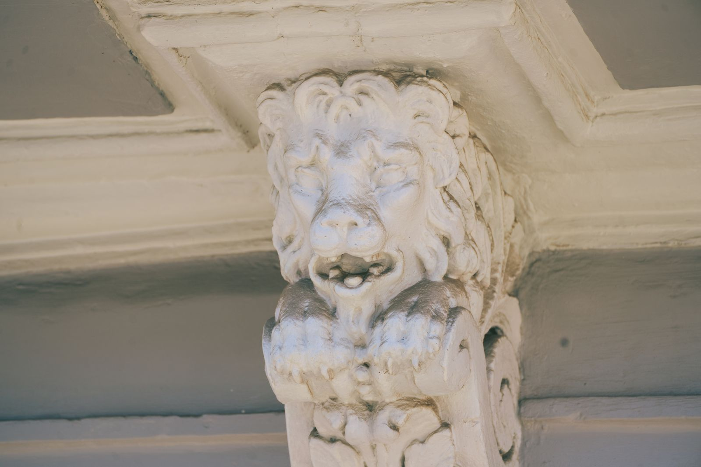
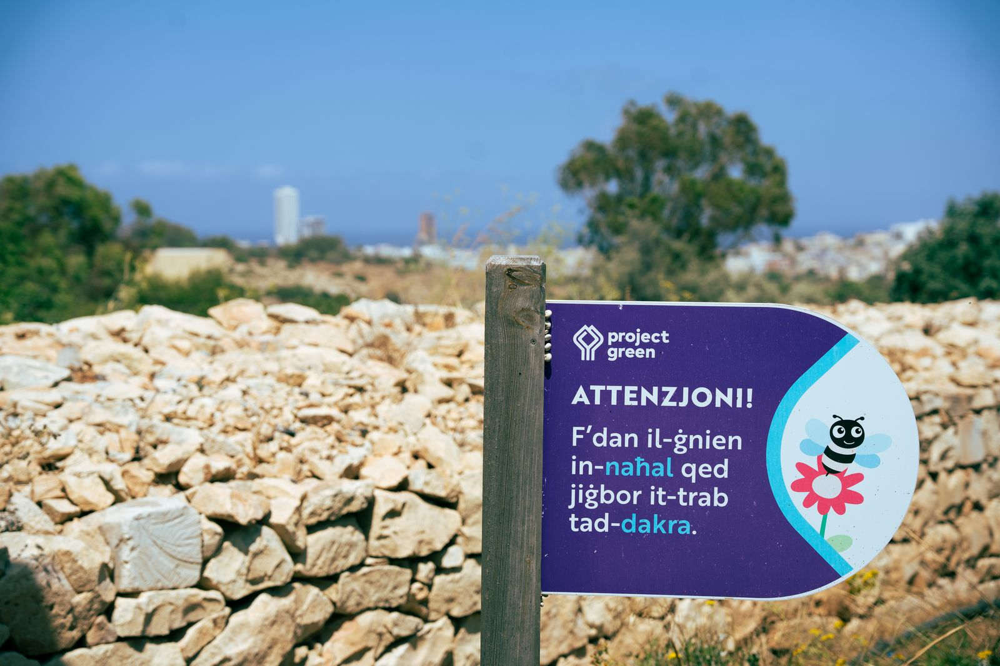
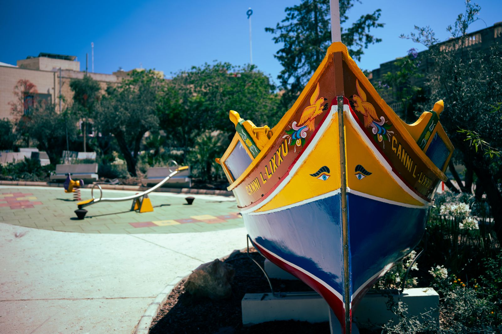
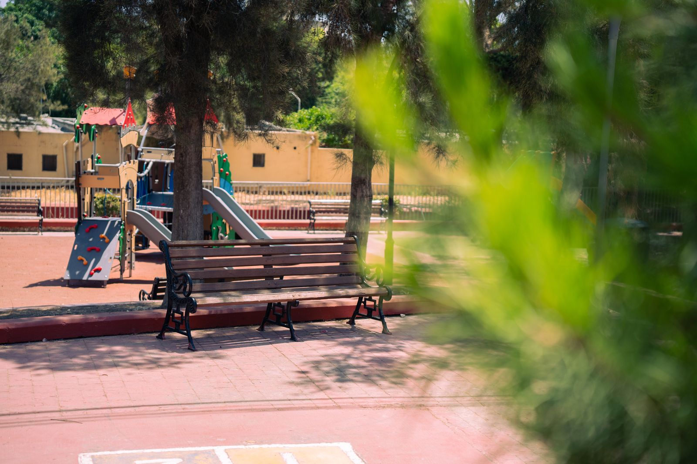
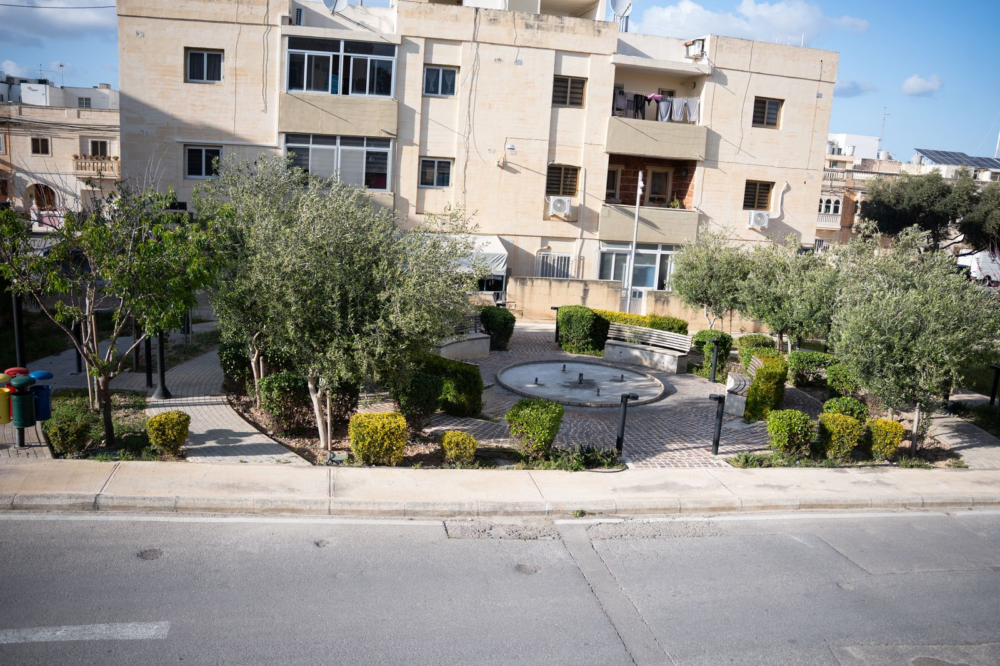
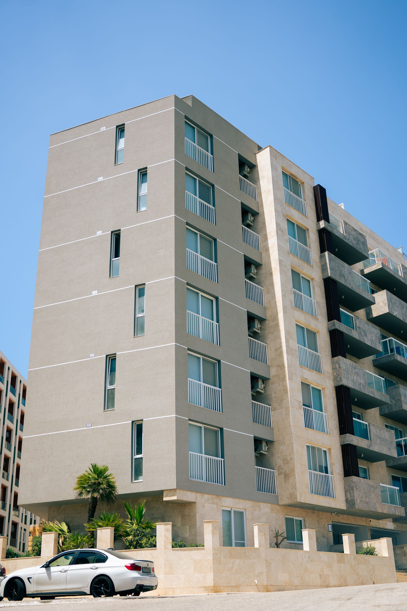
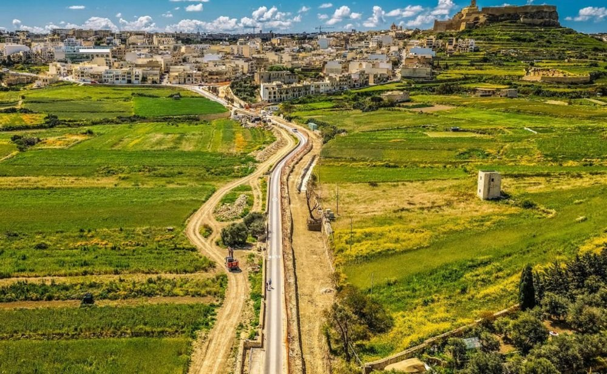
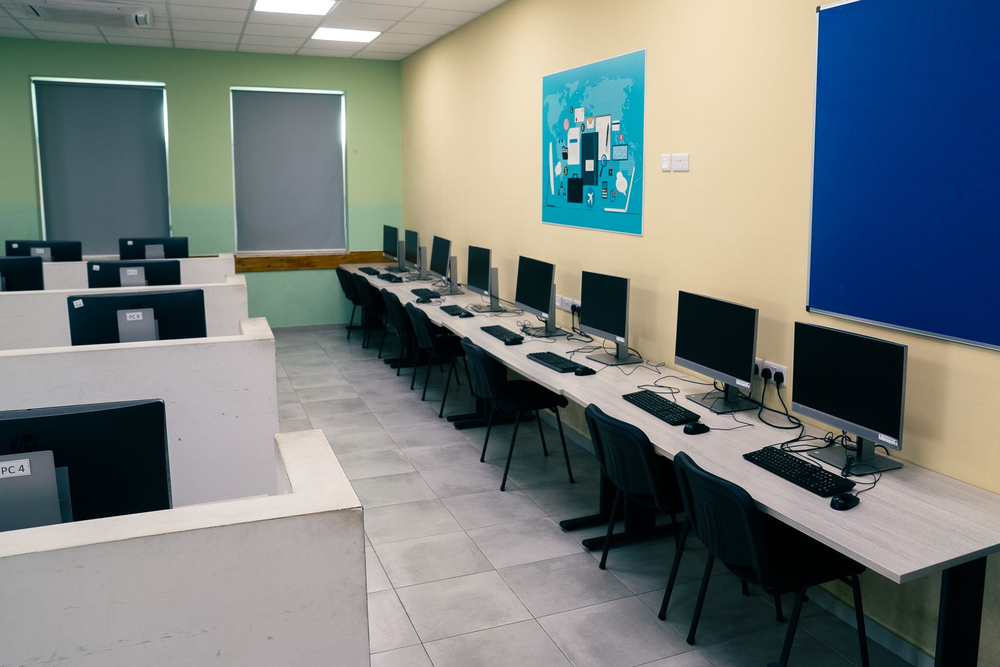
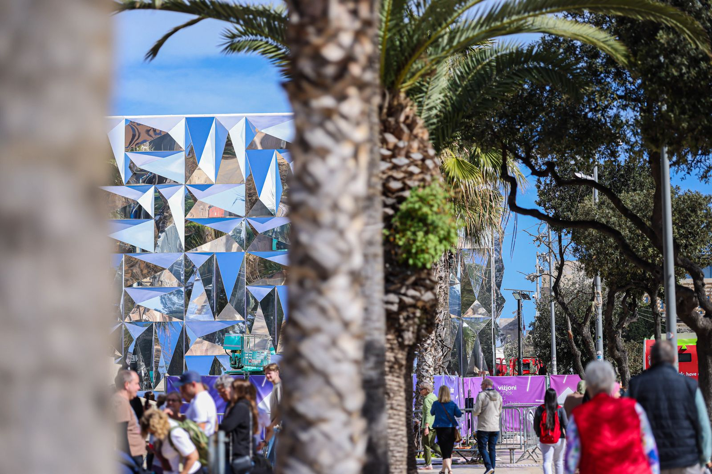